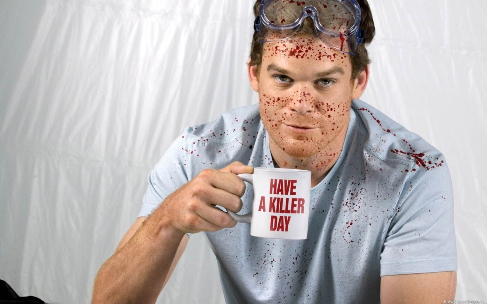

Сайт про
Декстера
Декстер родился в бедной и неблагополучной семье. Его отец неоднократно сидел в тюрьме, мать, возможно, занималась торговлей наркотиками. Также у него был старший брат Брайан. Мать Декстера вскоре стала информатором в полицейском участке и попала под руководство офицера полиции Гарри Моргана. Как впоследствии выяснилось, мать Декстера и Гарри были любовниками. Гарри настоял на том, чтобы мать Декстера вывела его на след одного наркодилера. Однако встреча прошла не так, как задумывалось — наркодилер понял, что мать Декстера работает на полицию, и убил её и ещё трёх человек, распилив их на части бензопилой в железнодорожном контейнере на территории берегового склада Майами. Малыш Декстер и его брат стали свидетелями всего процесса резни, находясь в контейнере. После жестокой кровавой бойни они ещё три дня просидели в луже крови и останков, дожидаясь, пока полицейские не нашли их. Первым, кто вошёл в контейнер, был Гарри Морган. Увиденное потрясло его, и, видимо, чувствуя вину за произошедшее (а также на него мог повлиять затравленный взгляд маленького Декса), он взял Декстера, дал ему свою фамилию и в возрасте 3 лет усыновил этого ребёнка.
Вскоре, когда Декстеру исполнилось 8 лет, его отчим стал замечать пропажу соседских собак. Мальчик ничего не помнил из своего прошлого, но необъяснимая жажда убивать давала о себе знать. Тогда Гарри решил с ним поговорить, и сын открыл ему свой секрет. Отец из любви к сыну не стал сообщать об этом никому, о чём впоследствии пожалел. Он по-прежнему находил трупы расчленённых животных, зарытые у себя в саду. Когда Декстеру исполнилось 14 лет, отец сдался и, решив, что нельзя побороть эту зависимость, он создал для своего сына Кодекс, которому тот был обязан следовать, чтобы не попасть в руки полиции. Гарри обучил его всем премудростям боя, научил заметать следы, не оставлять улик и находить жертв. По кодексу следовало:
- 1.Не попадаться.
- 2. Не убивать невиновных.
- 3.Никто не должен знать о его тайне.
- 4.Он должен быть идеален на работе, в семье и при окружающих.
- 5.Все трупы должны исчезнуть так, чтобы их никто не нашёл.
- 6.Когда Гарри умер, Декстер продолжил своё дело. Он работал в полиции судмедэкспертом по брызгам крови, это давало ему прикрытие и бонус. Он мог искать преступников, которых не смог покарать закон, а также устранять улики, направленные против него самого, и направлять следствие по ложному пути.